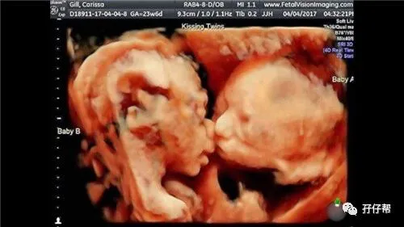
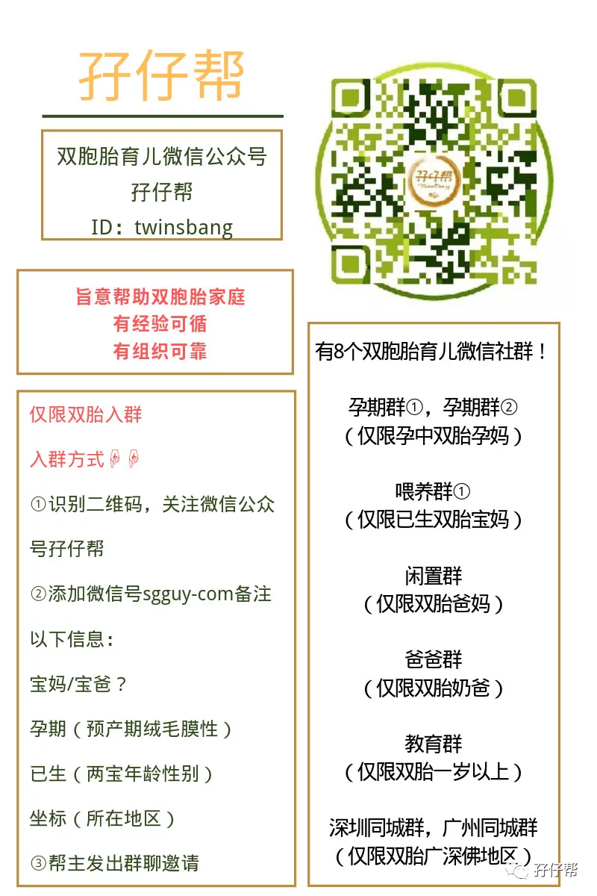

文|圆圈妈，一个文思如尿崩的双胎妈妈
图|来自网络，如有侵权，请联系删除
· 正 · 文 · 来 · 啦 ·
【01】两胎儿的发育情况
孕32周的胎宝宝有冬瓜那么大了，从头部到臀部长约43.6CM，约1868G▼：
孕32周的双胞胎胎儿发育图▼：
B超孕32周的双胞胎胎儿影像图▼：
【02】圆圈妈的孕期回忆录
Ⅰ 双胎妊娠的第九次产检
孕32周，这是我们娘仨约定的第二个目标！
GOOD！毫无悬念地实现了！
这次产检约了孙主任，她仔细看了我31周的B超单，果断建议我住院待产。
终于，我有点动摇了。
孕后期的各种症状都接二连三地冒出来：尿蛋白一个＋，宫颈管短，肚子发紧发硬，胎监提示有宫缩，贫血….
所幸，血压一直都控制得很好，从未出现异常。
但对于一个晚孕期的双胎孕妇，这一系列的症状足以证明我是时候入院待产了。
可是最终，我依旧拒绝遵医嘱。
不是梁静茹给我的勇气，而是初为人母，爆发出来的一种气场，越到孕后期我就越淡定。
都已经熬到这个孕周了，该来的就来吧！
带着这种大无畏的精神，我又雄赳赳地走出了医院。
回去的路上，我们娘仨定了下一个目标：往34周前进！
与此同时，我预约了1周后的产检，特意约了留医部产科一把手张海鹰医生，希望能听下专家意见，是否需要提早住院待产。
【02】孕32周那些囧人囧事
①全身像大卸八块似的疼
我感觉孕后期只有一个感觉：痛！全身都痛！
腰部，背部，耻骨，屁股…甚至手腕关节也跟着不听使唤似的酸痛，肿胀...
因为肚子大，我站不稳，坐不住，躺不下…
感觉上半身很重很沉，重心都集中在肚子上，好像有股力量使劲往前面扯，当我站起来的时候，总有一种要往前面扑的感觉。
因此，我走路特别小心翼翼，路过湿滑的厕所和厨房，一只手托住肚子，一只手扶着墙壁，做贼似的往前蠕动着。
②睡觉，对你爱爱爱不完
像个正常人一样睡觉，对孕后期的双胎孕妇来说，是个天大的笑话。
可能是白天躺太多的缘故，我晚上睡觉对床很抵触。好像床上有钉子似的，躺下就浑身不爽。
我时常为了摸索一个舒服的姿势，与床奋战个把小时而依旧瞪着双眼，难以入眠。
好不容易有点睡意了，胎动来了。孕后期的胎动，可比中孕期的胎动剧烈多了。
不知道是胎儿在抬头还是撅屁股，肚子突然一个大鼓包，我感觉一口气上不来，仿佛胸口被巨石压住似的，无法呼吸。
我被迫从床上爬起，缓缓坐下，深吸一口气，才感觉这口气畅通了。
这一坐就彻底睡不着了，看着睡在地上也能打呼噜的圆圈爸，我好生羡慕啊！
当圆圈爸半夜醒来找不到我，才发现我是整个人跪在地上，身子斜躺在沙发上睡着了。
没办法，只有“跪”这个姿势最舒服了！
③我生活不能自理了
洗澡，是个大问题。
宫高马上要与胸口持平了，我已经不能弯腰了！严格来说，我早已经没有腰了！
搓澡擦身洗头...这些动作，我也办不到了。
脚底脚踝也有个把月没认真洗过了，因为完全够不着，摸不到…
明明近在眼前，却远在天边，仅仅是隔了一个巨肚。
于是，洗澡这个任务交给了圆圈爸。
有一天，圆圈爸给我洗澡的时候，告诉我一个很恐怖的消息，在我的大腿内侧发现一大片紫红色的妊娠纹
他以为我会悲伤地哭倒一片…
嗯！没事，反正我又看不到，眼不见为干净！
④紧急情况演练
被一则新闻吓得不轻，说的是一孕妇在深圳地铁上突然破水生孩子了，所幸母子平安。
圆圈爸上班去了，只有我和婆婆在，这要是发生什么紧急情况，两个女人肯定会六神无主，方寸大乱。
于是圆圈爸发动全家人一起来个紧急情况演练，比如打急救电话时，如何准确说出地址和附近显眼的建筑物。
我把一些突然情况的处理措施写在纸上，贴在冰箱上，每天必看一边，争取烂熟于心。
圆圈爸也在地图上事先确定好最快到达留医部的路线，精细到哪条线路最快捷，哪个时间段哪条路不塞车…
入院的待产包，收拾完毕，随时准备就绪，若有状况，赶紧拎包上医院去。
④我好像得了产前忧郁症
临近生产卸货的日子，我总是莫名地烦躁，悲伤，害怕，哭泣...
喜欢鸡蛋里挑骨头，孕妇裤的松紧带明明调得很松了，依然让我有束缚感。
看见朋友圈的小伙伴们各种旅游美照笑得那么嗨，而自己却只能抱着肚子看窗外...于是，我沮丧地把她们都屏蔽了。
我似乎总有操不完的心，担心两宝宝出生后缺胳膊少腿，担心两宝宝出来之后养不活，担心收入少了，房子小了，没有给他们一个舒适的成长环境。
很容易受外界的影响，总觉得心里空荡荡的。
一首忧伤的歌曲，一场悲剧的电影，一篇伤感的文章…这些小事都能轻而易举引起我的浮想联翩，导致心情起伏不定。
我也不知道自己哪根筋不对劲了，好像整个头脑思绪都不受自己控制了。
稍微感觉舒服点了，又觉得幸福来得太突然，一定是暴风雨来临前的宁静，坏了，里面那两只是不是互相打架挂彩了？
上一秒很开心，还在琢磨着两宝宝的小名，大名，遇到好笑的名字会笑得见牙不见眼。
下一秒，突然很担心分娩时发生意外，担心自己上了手术台，就没机会出来了。
圆圈爸只是上班去了，看着他远去的背影就有一种生离死别的感觉，特别的悲伤。
经常胡思乱想，总是刻意去了解早产儿那方面的信息，然后就吓得半死。
那天看到一个关于早产儿的新闻,图片上那个可怜的小baby，那薄而近乎透明的皮肤，浑身插满各种管子…
我瞬间泪奔了，好像那个早产儿就是我的宝宝。
我只差没哭得背过气去。
哭完之后，心里更加烦躁，看谁都不顺眼，觉得没有谁能理解我，我好像被孤立了似的。
在我性情大变期间，圆圈爸被我揉捏成球，有苦难言！
☞☞TIPS☜☜：孕后期要小心产前忧郁症，而且要引起高度重视。
如果自我感觉情绪很不好，经常大喜大悲，患得患失，一定要及时找宝爸好好聊聊，寻求帮助。
虽然你可能会连看他都觉得不顺眼，因为你恨不得把你的巨肚挪到他身上去，让他也来体验下每天驮着10几斤重的肚子吃饭走路睡觉是啥滋味。
但宝爸是你唯一的战友，别因一时的荷尔蒙激素伤了彼此的和气。
除了十月怀胎和十级阵痛分娩，大多数宝爸都会很乐意想尽办法帮宝妈分担的。
姑娘，记住了，此刻，你只是个无助弱小的女人，肚里还揣着两个崽。
此时，你跟谁过不去都得给两胎儿一点薄面子，机智如你，更应该集齐各方力量，为你所用。
那些负面情绪，都暂且一边去，全心全意为迎接两个新生命，蓄势待发吧！
☞未完待续☜
上期推文:
连载（一）|圆圈妈双胞胎怀孕过程第4周
连载（二）|圆圈妈双胞胎怀孕过程第5周
连载（三）|圆圈妈双胞胎怀孕过程第6周
连载（四）|圆圈妈双胞胎怀孕过程第7周
连载（五）|圆圈妈双胞胎怀孕过程第8周
连载（六）|圆圈妈双胞胎怀孕过程第9周
连载（七）|圆圈妈双胞胎怀孕过程第10周
连载（八）|圆圈妈双胞胎怀孕过程第11周
连载（九）|圆圈妈双胞胎怀孕过程第12周
连载（十）|圆圈妈双胞胎怀孕过程第13周
连载（十一）|圆圈妈双胞胎怀孕过程第14周
连载（十二）|圆圈妈双胞胎怀孕过程第15周
连载（十三）|圆圈妈双胞胎怀孕过程第16周
连载（十四）|圆圈妈双胞胎怀孕过程第17周
连载（十五）|圆圈妈双胞胎怀孕过程第18周
连载（十六）|圆圈妈双胞胎怀孕过程第19周
连载（十七）|圆圈妈双胞胎怀孕过程第20周
连载（十八）|圆圈妈双胞胎怀孕过程第21周
连载（十九）|圆圈妈双胞胎怀孕过程第22周
连载（二十）|圆圈妈双胞胎怀孕过程第23周
连载（二十一）|圆圈妈双胞胎怀孕过程第24周
连载（二十二）|圆圈妈双胞胎怀孕过程第25周
连载（二十三）|圆圈妈双胞胎怀孕过程第26周
连载（二十四）|圆圈妈双胞胎怀孕过程第27周
连载（二十五）|圆圈妈双胞胎怀孕过程第28周
连载（二十六）|圆圈妈双胞胎怀孕过程第29周
连载（二十七）|圆圈妈双胞胎怀孕过程第30周
连载（二十八）|圆圈妈双胞胎怀孕过程第31周
下期预告：
连载（三十）|圆圈妈双胞胎怀孕过程第33周
-END-
重磅互动
#你希望写什么育儿经验干货？#
评论区聊一聊
随便提，万一下篇就写了呢？
关于这个号
谢谢关注！
我是圆圈妈
85后，全职妈妈
家有孖仔两枚，圆圈&圈圈
双胞胎育儿公众号：孖仔帮
ID:twinsbang
旨意分享双胞胎育儿经验帮助双胞胎家庭
有经验可循
有组织可靠
希望我的经验对您有所启发
期待与您一起共享双胞胎育儿经

